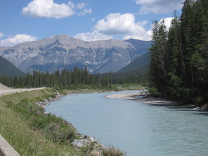
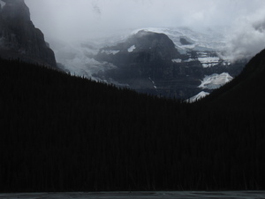

This page contains all my blog posts from the Missoula --> Glacier --> Waterton --> Kootenay --> Banff --> Jasper --> Edmonton bike tour, rearranged into chronological order and with better photo displays. Each photo is now a thumbnail that you can click to open a large, high-res version. You can also click the links below to jump to any particular post.
7.7.2015. Missoula, Parts I, II, and III.
7.8.2015. Missoula --> East Missoula --> Milltown --> Bonner --> Potomac --> Salmon Lake State Park.
7.9.2015. Salmon Lake --> Seeley Lake --> Condon --> Swan Lake.
7.10.2015. Swan Lake --> Ferndale --> Bigfork --> Creston --> Columbia Falls.
7.12.2015. Two days in Glacier National Park.
7.14.2015. Two days in Waterton Lakes National Park.
7.15.2015. Waterton Village --> Twin Butte --> Pincher Creek --> Beaver Mines --> Castle River.
7.16.2015. Photos from Glacier National Park.
7.16.2015. Photos from Waterton Lakes National Park.
7.16.2015. Castle River --> Burmis --> Frank --> Blairmore --> Sparwood --> Fernie.
7.17.2015. Fernie --> Elko --> Jaffray --> Wardner --> Norbury Lake Provincial Park.
7.18.2015. Norbury Lake --> Fort Steele --> Wasa --> Skookumchuck --> Canal Flats --> Fairmont Hot Springs.
7.19.2015. Fairmont Hot Springs --> Windermere --> Invermere --> Radium Hot Springs.
7.20.2015. Radium Hot Springs, again.
7.21.2015. Radium --> Kootenay Crossing --> Vermilion Crossing --> Castle Junction.
7.22.2015. Castle Junction --> Banff --> Castle Junction.
7.23.2015. Castle Junction --> Lake Louise
7.24.2015. Lake Louise --> Saskatchewan River Crossing.
7.25.2015. Saskatchewan River Crossing --> Jasper.
7.26.2015. Jasper --> Hinton.
7.27.2015. Hinton --> Marlboro --> Edson --> Nojack Park.
7.28.2015. Nojack --> Evansburg --> Entwistle --> Stony Plain --> Edmonton.
In summary.
Part I. The Greyhound from Seattle to Missoula took 11 hours (I thought 12, but forgot about a convenient time change). I don't like riding in buses for any length of time, let alone for 11 hours while trying to get a night's sleep. That's all I want to say about that experience.
Part II. After arriving in Missoula, my day was a bit of a nightmare. First, the city bus that Google maps directed me to take from the bus station to my motel blew right past me. This after walking to the bus stop in the hot humid noon-time sun carrying my luggage, which was an unwieldy cardboard box with 42 pounds of stuff in it (I know this because Greyhound weighed it). Eventually I called a cab and made it over to the motel.
Luckily my bike showed up at the motel shortly after I did, so I would have plenty of time to assemble it and make it to the post office before the business day was over.
I had to go to the post office to pick up a package containing two panniers (thanks Jon!!), a kit, and some odds and ends like a waterbottle, bungee cords, and a drybag. I had mailed this to myself, care of General Delivery at the Missoula post office, on July 1. At that time, I was warned that standard shipping might not show up until the 7th, but that if I paid for USPS Priority 2-3 Day shipping, it would arrive on either Friday the 3rd or Monday the 6th. Well, long story short, this was a lie.
(Long story: I went to the main post office, which didn't have the package, so I convinced myself that I had mailed it to a secondary post office in the north part of town. Went over there, where they didn't have it but told me that it might be at the main post office in a place that the clerk there hadn't checked, if in fact I had addressed it to the second place. So I went back to the main post office and spoke to a different person who was not only unhelpful but scolded me for not having the tracking number, without which I would have no way of tracking down a lost package. At this point I was nearly in tears, as it was getting towards 5pm and I hadn't eaten anything since two midnight Larabars on the bus. Finally I texted Amanda to see if there was any way I had left the original USPS receipt with a tracking number somewhere in her house. To my astonishment she actually found it (!!), at which point I was able to look up the package and see that it was just inexplicably late despite the priority surcharge. Of course, this fee was nothing compared to having to pay for a motel for an extra night so I could wait for the package to come a day late.)
Back at Motel 6, I assembled everything I had with me and made a list of last-minute items to purchase. Ran a few errands. Watched some motel TV. Went to sleep.
Everything I'm bringing. From left to right, and from top to bottom:
Tent, sleeping pad, inflatable camping pad, 2 bike jerseys, 2 tshirts and 1 tank for off-bike, shoe covers, rainjacket,
cotton travel sheet, travel towel, 2 pairs lightweight socks, 2 bike shorts, gloves, off-bike shorts, long-sleeved shirt with SPF, leg warmers, arm warmers, rainpants, cotton/spandex sweater,
collapsible bowl, small parts and tools (spare brake pads, patch kit, superglue, nuts and bolts, etc.), 2 spare tubes, headlamp, leatherman multi-tool/knife set, bike multi-tool/hex wrench set, bug spray, bike pump, various toiletries (soap, toothbrush, sanitizing wipes, sunblock, etc.), first aid kit, glasses, Adventure Cycling maps, AAA Western States and Provinces map, paper/notebooks/pens,
6L water reservoir, folded solar panel, cheap Android tablet and bluetooth keyboard, extra charging block, USB speaker for music, digital camera, SD cards and adapter for camera and tablet, bear spray,
lightweight cable lock, flip-flops, SPD shoes, helmet.
Not pictured: lots of food, waterbottles, hot thermos, large heavy-duty drybag, aluminum spork, "arm coolers" (white SPF sleeves), fanny pack with valuables like passport and license, panniers, handlebar bag, cell phone, USB-to-micro USB charger, third set of cycling clothes, 1 pair extra warm socks. I think that's it!!! So much stuff...
Part III. This morning the package finally arrived. I spent some time packing the panniers up and getting everything to fit well on the bike. Then I went out for a bit of a test ride to make sure everything was secure and well-balanced. It's so great to have the front rack and front pair of panniers; on my cross-country tour I had everything loaded on the back (besides the handlebar bag) and it definitely made the bike hard to handle. Not to mention that my bike wasn't nearly as nice as this one.
Anyway, here are some pictures. From here on, I'll be using a digital camera rather than the crappy one built in to my HTC phone. So hopefully the pictures will look a lot nicer. (You should also be able to right-click on any image and select "view image" to see a full-resolution version.)
My bike (almost) fully loaded on one of the many, many, cute little pedestrian/cyclist bridges off the main part of the river.
Standing over the Clark Fork River.
View from that bridge of people tubing down the river.
A beautiful part of the cycling path along the river. Most of the paths were paved, but I was pleased that my bike & gear held up to the rougher gravel parts as well. I've heard that some of the roads I'll be taking, especially in Canada, will be gravel or with gravel sections.

Some lovely wildflowers along the bike path.
It was wonderful to be on my bike. Super excited for tomorrow!
Great first day out. Got up at 6 but it took me longer to get rolling than I planned. When I tested everything out yesterday the main thing I didn't have with me was the bear-proof food container (filled with food). This turned out to be much heavier than I had gauged, to the point where I was unable to put it in a front pannier like I had planned when I arranged everything. In the back, even though the weight is unmatched, it's less of an issue to have an imbalance from side to side. In the front, it was going to wreak havoc with the steering. This resulted in an hour of rearranging everything, then realizing I forgot to put air in the tires before loading the bike, and taking everything off to do so. In the end I hit the road by 7:30 which was not too bad considering.
Made pretty good time for a few hours. Probably going around 12 mph on average which is not too far from my steady pace on an unloaded bicycle. The reason is that it's pretty much flat coming out of Missoula, and so despite the extra weight necessitating a greater force to get the bike moving, once it's rolling it doesn't take much more effort than an unloaded bike to keep it moving. Hills are another story, but there was only one real climb today and it was immediately followed by an even greater descent into a bit of a valley.
The scenery was absolutely gorgeous. I wish I could share so many more views than the few pictures I took, but the momentum situation is an extreme disincentive to stopping for photos.
At first the road was shady and forested. For a while it ran alongside the beautiful Blackfoot River.
After a while the dense pine forest gave way to more prairie-like countryside, although with those dark pines always in the background.

Around 11am it had become hot and there hadn't been shade for a couple hours. I started watching for the next spot of shade to stop and have lunch in. By 11:30, I gave up and had a bite to eat on the side of the road in the sun. The flies were relentless so I moved on pretty quickly. The heat and sun set the stage for what happened next, which was that at 1pm, hardly my expected stopping time, I came around a curve and saw Salmon Lake. I immediately decided I was going to stop for the day and camp at Salmon Lake State Park, which I saw on my map had a campground. I had only gone 47 miles, but when you see the pictures of the lake, you'll understand.
I wish this picture could capture the way the pines rose up like a wall against the sky, and the surface of the lake lit up like a giant mirror. Especially after living in the desert for two years, I just couldn't stop reveling in the sight of so much open water.
So that was that. Paid for a site and set up my tent and everything. There was no one else there yet except for some RV's staying for several nights. Went for a long swim that doubled as a shower and tripled as doing laundry. The water was the perfect temperature: cool enough to be refreshing but warm enough that one doesn't have to keep swimming to stay warm. Got out and ate dinner at 3pm. Ha. I decided that stopping early was a fantastic idea that would guarantee a place at all the first-come, first-served campgrounds. On my cross-country trip I had no control over the time I stopped for the night (for most of the trip), and it was often so late by the time I finally caught up to my friends that there was scarely time to eat and set up the tent before it was time to sleep. This was so much more pleasant. If I get started at 6 or 7 am, I can even do 80 or 100 miles and still be done by 3pm if I want.
Also now I only want to stay at places with lakes. I can't adequately describe the feeling I had swimming in that cool lake looking at the wall of trees. It felt like something was swelling inside my chest and also like I might start crying. It kind of felt like loving a person, but directed at a lake. Okay, that's enough out of me today. Too much.
P.S. I hope no one worried about me today, as I haven't had phone service since pretty early on (certainly sometime before 1pm Mountain Time). Please wait at least 48 hours before worrying. I'm pretty certain I will pass through an area with service at some point every day.
Things I saw today: a herd of black cows crowding under a large tree's shade; a few giant yellow butterflies; hundreds of little multi-colored butterflies; a dead deer next to the highway; a dead skunk next to the highway; lots of litter (mostly soda cans and, horribly, beer cans); the Blackfoot River; the Clearwater River; one cyclo-tourist heading in the opposite direction; half a dozen logging trucks, a truck carrying a single log that must have been 40 feet long or more; tanker trucks; a tractor-trailer driver who gave me a wave and a big smile; a middle-aged bicyclist in a safety vest who asked jokingly if I could tow him; countless scraps of tire retread; a building supply yard with large violet-colored rocks; violet-colored pebbles dominating some stretches of highway concrete; some kind of hawk; lots of songbirds; a swarm of blue dragonflies next to Salmon Lake; unending blue sky.
Another view of Salmon Lake, as I was leaving this morning.
My first view of snow-capped mountains!!
So yesterday I fell asleep around 7pm--I didn't mean to, but the biting flies were relentless and I had to crawl into my tent to escape them, and then I started watching a math lecture I downloaded onto my tablet from Youtube while lying down... so yeah, fell asleep around 7. I woke up around 9 to the sound of voices and there were two other cyclists in the hiker/biker area! So cool. But also they were talking about food, so I got hungry, so I retrieved my food from the bear box and ate a peanut butter & jelly on a tortilla (more space-efficient than bread), and then that made me sleepy, so I went back to bed without really talking to them.
Then this morning, I talked to one of them, Windy, while I was getting ready to go. She and Robert are friends, actually old roommates originally, from San Francisco. They're planning to ride all the way across the country and finish in Bar Harbor. This route is a little bit of a detour for them, but they really want to see Glacier, so they're going almost to the Canadian border and then cutting east towards Billings to resume their trek.
They were planning to spend the night in Swan Lake, which was a not insignificant factor in my decision to stop there, after about 64 miles. They actually showed up a few minutes later, at the same little store I was in, buying lemonade and postcards. We were just up the road from the National Park campground, where we all agreed to split the cost of a campsite. Still not even 3pm. Went for a long swim in Swan Lake which was even nicer for swimming than Salmon Lake--crystal-clear water without muddy sediment and that "lake smell"--but maybe a tiny bit less scenic. Still gorgeous and with perfectly temperatured water. If this continues I won't ever need a shower. Maybe a haircut though.
Things I saw today: snow-capped mountains; two tipis that looked to be in current use; a 3-day-a-week town library in a town with population 343 that had free wifi and a spigot out back (thank you Condon!); an old wooden wagon with giant metal wheels for sale in a yard; a row of cabins/condos near Seeley Lake with an asking price of $69,000; a reference to a place called "Broken Leg Mountain;" monarch butterflies; two more skunks killed by cars; several fenced-in horses, burros, and more cows; a roadside stand offering "Chainsaw Cut Bears" (statues); Dog Creek; Lion Creek; Piper Creek; Salmon Creek; Goat Creek; Porcupine Creek; finally, "Soup Creek;" the Swan River; Swan Lake.
Another great day. Rode 52 miles to Columbia Falls, less than 20 miles from Glacier! I thought about going all the way to West Glacier, which is right at the edge of the park, but there are some complicated restrictions on bicycling in the park which make it a little tricky to plan the next few days. Basically there are two roads which bicyclists can't be on between the hours of 11am and 4pm, because of heavy and dangerous traffic. The first is about 11 miles right at the start of the park, and the second is the biggest climb of this trip, probably: a 3000-3500 foot climb over the course of about 10 miles. In between these two roads is a stretch of about 13 miles.
The upshot is that I don't particularly feel like having to do all 34 miles, culminating in a big climb that I'm unsure of my ability to handle with so much weight on the bike, all before 11am. So instead I'm going to get up early tomorrow and do 30 relatively flat miles: the 20 to Glacier plus that first restricted road, then I'm going to stop and spend the whole day in the park, hiking, and swimming in Lake McDonald. The next day I'll get up early and do the climb and go to the visitor center at the top of the pass and go for another hike. Once I'm over the pass there are no more restrictions, and I believe it's less crowded as well!
Anyway, the ride today was fine, although hot already by 8:30 and ended up with a high of 93F. Ugh. However, Columbia Falls sits on the Flathead River, which is a glacier-fed, gasp-inducing-cold, fast-moving thing of beauty. I went for a swim, found an RV park with some tent camping sites to set up in, then went for another swim. The icy water felt great on my various skin ailments like sunburn, spiderbites, something on my ankle I really hope isn't poison ivy....I also sweat so much today that there were white salt crystals on my face and neck. I bought a straw hat, cut off the brim, and zip-tied it to my helmet to try to create some shade. It's an improvement but not a solution.
A cool feature of the Flathead river is that instead of sand, the riverbank is covered with small smooth stones ranging from pebble-sized to maybe fist-sized, and these stones have a really fascinating property: when wet they are a rainbow of beautiful bright jewel tones, but when dry the colors are almost completely greyed out. So for instance a patch of gravel on the shore would look like a greyish patch of gravel anywhere, but then if someone were to, say, stand on it after swimming and drip a ton of water all over the gravel, it would suddenly look like a pile of gemstones. I took some pictures of this phenomenon to show here, but the unfortunate thing about today is that I seem to have lost my SD card reader which lets me load pictures from my camera onto this tablet. So until I replace that I won't be able to share any photos I take. I still have the photos though since I didn't actually lose the SD card itself.
Actually, the more unfortunate thing about today is probably that it's raining, and thunderstorms are being predicted for overnight. I was extremely lucky though and had more than half an hour between when I started feeling raindrops and noticing the ominous clouds, to when it actually started raining. So I had time to put the rain fly on the tent, prop open a little vestibule with it, get all my panniers packed and under the vestibule, get my clothes off my little makeshift clothesline, cover the bicycle seat, etc.... I had already eaten dinner, too... so really I have nothing to complain about. It just remains to be seen how rainproof this setup is, as it's my first storm in this tent. So far my only issue is that it's still about 80F, and obviously humid, and it's sweltering under the fly.
I must be really happy if I'm happy right now. Glacier tomorrow!!
Didn't get a chance to write much over the last couple days. Mainly this was because I met a lot of other cyclists and spent most of my off-bike time talking to them, which was really nice.
Yesterday I rode from Columbia Falls over to West Glacier, then into the park. It was overcast all morning and then shortly after entering the park it started to rain a little. Because thunderstorms were forecasted for Saturday afternoon, I raced to the Sprague Creek campground, which was a mostly flat 10 miles inside the park, at what must have been my fastest speed of the trip. Then set up my tent and got everything under the rain fly in record time. I was sure that any second a huge storm would start. But it just stayed overcast and a little drizzly for the whole day.
As I mentioned in my last post, the next section of Going-to-the-Sun Road (great name, right?) is off-limits for bicycles after 11am, so even though it was only 10:30 by the time I got to the campground, I had no choice but to wait the rest of the day there. Only 30 miles.
I walked up the road to the Lake McDonald Lodge, which is a big tourist spot in the park. The lodge was built in 1913, and there was actually an older building at that site from 1895, when the only way to even get to the site was by steamboat (not even roads for horses or carriages existed). I overheard someone in the lobby saying that to stay there you need to make a reservation one or even two years in advance. The lake was beautiful but because it was overcast there was no view of the mountains across the lake.
I went to a trailhead across the way from the lodge and thought about taking a hike, but there was a big sign warning about bears and mountain lions which prominently stated "NEVER HIKE ALONE." I also realized I had left my bear spray and all my waterbottles back at the campground, since I was assuming I'd find more to do at the lodge. So I scrapped that plan and just walked the mile or so back to camp.
After returning I met the other travelers at the hiker/biker campsite, whose tents but not selves had been present when I arrived. There was a guy from Chicago who just graduated from college and was riding from Chicago to Seattle. He is planning to meet his parents in Banff for a week and then detour north for a bit, possibly to Jasper as well, so we exchanged information to see if we're up there at the same time. Interestingly, he was going in the opposite direction through Glacier before heading north. This kind of makes sense though; if you look at a map you'll see that the road goes on a southwest-to-northeast diagonal. My main direction is north and his main direction is west. If that makes sense.
There also were three women from Oakland doing the first part of the same tour I'm on. They started in Missoula, went into Glacier and up to the Continental Divide, then turned around and are going back the way they came. So they were also going in the opposite direction when they stopped at Sprague Creek. I was really excited to meet them, especially since they will be not too far from me in Davis and who knows, maybe there will be opportunities to do a trip together. All of us had a really fun night drinking boxed wine and playing this game that was like a combination of Taboo and charades. Basically, everyone writes a bunch of nouns, either famous people or places or objects or whatever, on slips of paper and puts them in a hat. Then people take turns picking them and getting the others to guess them without using any part of the word (like Taboo). Then, after you've gone through all the words, you put them back and do a second round with the same words, but you can only give a single word as the clue. So it's tricky but not impossible since everyone has seen the whole pool of answers already. Then after that you play a third round where each clue is a single silent gesture. It was really fun.
Today was Logan Pass. It was one of the toughest rides I've ever done. I don't want to complain too much since I'm very glad I did it and very proud of completing it, but it was a stressful combination of being incredibly physically demanding and also terrifying. The first half of the ride the uphill is on the inside of the road, but the last 10 or so miles, which have a steady grade of 5-6%, are on the outside of this incredibly winding road, with no shoulder in most places, and a long drop off a cliff. When there was some kind of barrier, it was generally a fence or stone wall that was all of 2 feet high--not even up to the height of my bike wheels. I'm pretty sure that if for some reason I had fallen off my bike, I would have easily gone right over the "guard-rail." And by "some reason," I mean the hundreds of cars and trucks driven by tourists who acted like they had never seen a bicycle before. I can't believe how many people passed me dangerously close during a blind hairpin turn while I was literally on the edge of a cliff, instead of waiting 30 seconds until they could see further down the road. Oh sorry, was I holding up your scenic drive on your way to walk around and take pictures? I just don't get it. And getting furious and scared was a big part of what was hard about today. But also it was the 3300 vertical feet with my 100 lbs of stuff. And it was sort of drizzling again, and so foggy at higher elevations that I got as soaked as if I were riding through a heavy rain. At the top, at the continental divide, there was some snow on the ground, so that gives you an idea of how cold it got too.
All this negativity would be nicely balanced out if I could just show you some of the incredible photos I was able to take of the glaciers and moraines and mountains and valleys. Sadly, I'm still working on a replacement for getting the photos off my memory card. So you'll have to bear with my unedited rambling for now.
Ended up doing 52 miles today. Spending the night in a town called Babb, on the Blackfeet Indian Reservation, just a few miles from the border.
First of all, Waterton Lakes was incredible!! Highly recommended to anyone. My experience was surely skewed by the fact that it was rainy for most of my stay in Glacier, but I found Waterton (which is essentially the Canadian half of the same park) to be even more scenic and hikeable than Glacier. Mainly this is a reaction to the way the park was laid out. In Glacier, all the campgrounds I saw were in the woods, whereas the Waterton Village Campground was right on a lakeshore in the open, so there were absolutely staggering views of mountain peaks right from the campground. In Glacier the best views were only from that long harrowing drive. Also you pretty much had to drive to all the trailheads in Glacier, as I wouldn't recommend walking along the road. There are shuttle buses you can take in the park instead of driving, but unless I misunderstood, they only made a few stops and so couldn't be used to get to a lot of trailheads. On the other hand, Waterton had a lot of trails that started right near the campground, and there also was a beautiful, paved bike and pedestrian path alongside the road that could be taken to other areas.
More good news: on the 16th I plan to end in Fernie, British Columbia, where there is a package from amazon.ca waiting for me--an SD card reader that I ordered and sent to myself c/o General Delivery. So I will hopefully be posting some of my pictures from Glacier and Waterton on Thursday.
A more chronological account of the past two days: coming over the border from Babb and into Waterton Village was another tough day. Although the terrain was nowhere near as challenging as Logan Pass, it was mostly rolling hills, with a few extended climbs, and in several places it was steeper than the Going-to-the-Sun Road (though not as long, obviously). Since my legs were pretty tired from the get-go, I made very slow progress. I had allowed myself to sleep in until it was too hot to sleep, so I wasn't on the road until close to 11. Then I lost just over an hour since I forgot my camera and had to double back for it. All told the 39 miles to Waterton Village took me until nearly 5pm.
The border crossing went worse than I expected. I figured the agent would take a look at me, see that I was a tourist and obviously not smuggling anything in my few small panniers, and wave me through. But he wasn't interested in potential contraband--he was interested in whether I was trying to sneak into the country to stay. Ignorant of this, I answered all his questions honestly (and incorrectly): Where are you headed? Well, probably to Jasper, but maybe further to Prince George, or back towards the states, I'm not really sure. How are you getting home? Umm, probably a bus, but maybe a plane, or a bus and then a plane? I'm kind of waiting to see where I end up. So you don't have a ticket home? Well, not yet... How much cash are you carrying? Umm, somewhere between 100 and 200 bucks I think? So what do you do for employment? Well, I'm not working right now, obviously, but I'm going to be in grad school and working at the university this fall. Where? University of California in Davis. That's in Southern California? No, Northern. Kind of close to San Francisco. I thought you said you were from Southern California? Well, yeah, but I'm kind of in between those two places right now.
And so forth. Eventually I convinced the guy that I was indeed going to return to the states after my trip and that this wasn't the world's strangest plan to immigrate to Canada.
Anyway, for these various reasons it was pretty late when I got to the entrance of Waterton Lakes, and all the campgrounds were full, including the "walk-in" sites as they were called. I was exhausted and I think I looked pathetic enough when I said, "isn't there anywhere I can just put up a small tent?," so the ranger made a call to the campground and they agreed to give me an "emergency" spot in the overflow camping section. (I put emergency in quotes because when I finally got there, there were about 30 other parties in the "emergency" section already.)
At the campground, I was just registering and paying for the spot when a woman came running up to me. She said she was a cyclist as well and invited me to put my tent up on her site. Unfortunately, the park employee had just finished the transaction and was giving me my change, and she wouldn't issue a refund. But I went over to that campsite to thank the woman, and got into a long conversation with her and her husband. Their names were Yurka (I'm sure I'm spelling this wrong; it's Czech and I never saw it written, but that's the phonetic spelling) and Patrick. They live in British Columbia and are taking 3 months off to tour through Canada and down through Glacier, Yellowstone, Wyoming and Utah, then flying home from Salt Lake City. Unfortunately Yurka had injured a tendon or ligament above her knee, and they had to take five prescribed rest days. I said I was thinking of taking a rest day after the way my legs had felt on the way to Waterton, so they invited me to share their site the following night and hang out with them all of Tuesday, an offer which I eagerly accepted.
On Tuesday we went for lunch in Waterton Village and then for a hike of around 7 miles, up into the mountains to an alpine lake, which I went in and decided was the coldest water yet. As we were getting ready to hike down a storm front started swiftly moving in, and it rained on us nearly the whole way day. We had brought rain jackets so at least I was able to put my fanny pack (with my passport, phone, and camera) securely inside that. I realized that rain has been stressful mainly because I have so much stuff to try to keep dry, and not because I really mind being rained on myself. As long as my tent and sleeping bag are dry, and none of my electronics get ruined, and I have some dry clothes, I'm totally fine.
We didn't see any larger wildlife up in the mountains, which was kind of surprising. I think I was secretly hoping to see a bear while I was with two very experienced mountaineers. We did see a limping doe with two adorable fauns down in the village; apparently she's been there for quite some time. I wonder if she injured her leg stepping in a prairie dog/ground squirrel hole, of which there were hundreds or thousands in the town and campground.
Yurka and Patrick were so much fun to talk to and had decades' worth of stories about surviving avalanches and hiking over the snow in Banff in the winter and bike touring through Switzerland and Italy... gave me some great ideas and taught me some things I didn't know about bears and camping and the like. It's nice to talk with people who are into this kind of stuff and don't just think I'm a crazy person. It also was really nice to have two people to hike with since I'm trying to heed the "NEVER HIKE ALONE" warning.
It was a little sad to leave after such a nice rest day in such a nice campground. Patrick actually rode with me for about an hour in the morning (eager to be back on his bike) before I continued on. Probably to Pincher Creek or beyond today!
Things I saw today: a beautiful doe crossing the highway, then stopping in a field of wildflowers to stare at me with huge eyes; overgrown fields rippling like waves in the wind; a grove of wild huckleberries; a poetic storm cloud which somehow rained on only me while the rest of the sky was sunny and blue; a fruit stand selling the most amazing peaches and apricots and cherries.
Distance: 53 miles. Terrain: rolling hills without end. Headwind: absolutely beastly. At one point, actually right before that poetic storm cloud formed above me and started raining, I got off my bike and walked it downhill. Yep. Didn't get off and walk on Logan Pass, didn't get off and walk on some of the 8% or higher grades near the border and out of Waterton.... but I had to walk down a hill that I didn't have the strength to pedal down. Absolutely incredible wind. There were fields of crops and overgrown grasses that were pushed nearly flat during the gusts, and would ripple like ocean waves when you looked over an expanse of them. Cool, but definitely not welcome.
The shore of Lake McDonald had those colorful stones I was talking about earlier. Here's a photo of the beach, where I dripped some water on one half of the stones in the frame.
I think this was Sprague Creek, where my campground was.
Photos from Going-to-the-Sun Road:


On the other side of Logan Pass, towards Saint Mary, the weather finally cleared up.
These first pictures are from the road between Glacier and Waterton (the Chief Mountain International Highway). That's Chief Mountain in the first and second photos.

A group of cows that were blocking the road. As I shouted they started stampeding (in the right direction, luckily), so I followed at a bit of a distance. Finally a few cars came and scared them off the road.
Re-entering Glacier just before the border.
One of the lakes in Waterton Lakes park.
View from the start of my day hike in the park.
I've fallen behind on the blog by a couple days; sorry about that. I've put placeholder entries that I plan to go back and populate with pictures and things, once I catch up. Yesterday in particular I was so tired that I ended up sleeping about 13 hours, from 6pm (right after setting up my campsite and eating dinner) to 7 in the morning. I guess I must have needed extra rest due to so much exercise. (?)
Today was a fairly uneventful riding day. Pretty flat with some little hills and not too much wind. Rode 104 km. Kilometers are fun because the same amount sounds so much more impressive. For almost the whole day I followed the Kootenay River which runs pretty wide and shallow, with lots of islands and inlets. Very pretty.
Eventually I came to a place called Columbia Lake. The peaks across the lake were stunning and there was a nice respite from the highway due to a local road that hugged the shore.
Before I left I prepared some UV-sensitive paper, by painting an emulsion on it and then storing it in a lightproof bag, so that I could make some solar prints on the road. Today was the first opportunity to actually use this, since it's been so rainy, and even when the sun has been out I need also to have little or no wind, and running water nearby (to set the print by washing off any unexposed emulsion). They definitely have an "amateur charm" but worked pretty well I think!
Some delicate purple wildflowers.
A dandelion.

First, the campground I stayed at last night was really lovely. Here's a photo of the view from inside my tent:
And here's the spectacular way the sky looked this morning:
I envisoned today as a pseudo-rest day, like a minimum effort riding day, which turned out to be not exactly how it played out. Radium Hot Springs is only about 45 km from FHS, but because of this "easy day" I was a lot more ambitious with going off route and riding my bike to do stuff than I usually am. So it's already after 7pm and I'm just sitting down to dinner.
My first detour was over to Invermere, which is just a mile or two off of Highway 93 North (the road I've been following pretty much since Fernie). My map showed that there was a bike shop in town, and I was in desperate need of some chain lube (which I somehow forgot to bring despite overpacking everything else). This mile or two turned out to be down an extremely steep, long hill--and then up an extremely steep, long hill. So I had a long climb both coming and going. Invermere however had a cafe that was serving a vegan "North African Split Pea" soup which was the first hot food I've had in some time, and therefore one of the most delicious things I've ever eaten. The only other meals I've eaten at restaurants were a veggie burger and fries in Waterton and a "burrito" with only beans and mushrooms and peppers inside a tortilla in Babb. Otherwise I've been roughing it with not even a camping stove (which by the way has been forbidden anyway at probably half the campgrounds I've stayed in, due to extreme fire danger). I've certainly been getting by and having enough to eat, but it's been much more utilitarian than pleasurable, and so a bowl of hot, exotically spiced soup really hit the spot.
Eventually I got over to Radium, where I had a choice: a campground downhill from the town (meaning an extra climb in the morning, before going over Sinclair Pass), or a campground uphill from the town (with a sweet descent in the morning). Obviously since this was a "rest day" for me, I chose the latter. This turned out to be a more challenging climb than I had anticipated, and I was pretty tired by the time I got to the campground.
On the road just before Radium Hot Springs (that's part of the Columbia River):
This is just partway up the road to the campground. You can see the town center below.
After setting up camp, and doing some laundry and stringing it up, I decided to go check out the hot springs (which were a big reason why I wanted to stay here in the first place). Here is where I made a grievous error.
This goes back to last week, when I went for a hike in my bike shoes for the first time, and consequently developed one of the worst blisters I've ever had. Here is a graphic picture of it:
As a result, I've been able to bike fine (because my heel doesn't really go up and down in my shoe when I pedal), but walking is extremely painful. There was a hiking trail of about 3 km from my campground to the hot springs, so I decided there was no way I could walk it, and decided to ride my bike. I looked for any indication on either my map or the trail itself that bicycles were banned, but there seemed to be no prohibition. Great! I set off.
Well, after about a kilometer it became apparent that there was no need to prohibit bicycles on this trail, since no one would ever dare to take one on it. The trail began alternating between stairs, and a soft dirt path that dropped off steeply to one side of its two-foot expanse, so that a single instance of your front tire digging in too deeply and swerving unexpectedly would lead to, if not certain death, then at least probable maiming. So rather than spare myself from walking on the blister, I ended up walking plus pushing my bike up and down steep hills, or carrying it over my shoulder.
Anyway, the hot springs were lovely, although I have no pictures since I left my camera in the changing room. It was basically two large swimming pools, one at 86F, the other at 102F. The hot one was too hot for me to do anything besides sit for about 90 seconds, but the "cool" one was really nice and not too crowded. They even had a deep end roped off with a 1-meter diving board that the kids were taking turns using. I did some jumps and dives because I have no shame, even though I was the only one over 8 years old using the thing. Not my fault other adults don't know how to have fun in a pool.
Of course I didn't want to go back the way I came, so I found the parking lot for the hot springs and followed the road out. Can you guess what I'm going to say next? Yep, I had to go all the way back down to the town center and climb up that horrid hill again. Granted, it was a lot easier without my bike loaded up, but it wasn't quite as easy as I'd hoped--it's not like I can fly up mountains all of a sudden just because I took some weight off my bike.
The road coming down from the hot springs was beautiful, which made it more worthwhile. There was one point where the road carved through tall stone sides:
Here's another photo of that part of the road, from below where you can see some running water:
One thing I haven't talked a lot about in my blog is how much it's been raining--I've had only one day without any rain since the 10th. That said, I've been lucky in that it's mostly been light rain, or downpours only after securing all my belongings. (The only exception, before today, was a horrible freezing rain/hailstorm on my way to Fernie, which was so bad that a stranger picked me up and drove me about 10k down the road, at which point we passed the storm and I was able to warm up in a grocery store lobby and keep going. I still haven't had a chance to fill in that day's journal.)
Even in the case of the horrid hailstorm, it was a small storm system which moved past in less than an hour. That's been pretty typical of the bad weather I've experienced--I can usually wait it out, or ride out of it. So this morning, as I struggled up Sinclair Pass, I didn't pay much attention to the gathering storm ahead. Okay, it was bad enough that I pulled out my emergency trash bags and tried to cover up all my panniers and camping stuff, but I still figured it would just clear up.
After an hour and a half of climbing, it was bad enough that I found a place to pull off the road and hide under a tree. The rain got heavier... and heavier. I waited 30 minutes, then 60, then 90, and it was pouring heavier than ever with no blue skies in sight. At this point I was soaked, despite the relative shelter. I also was acutely aware of the fact that, because I'd had no sun to power my solar panel for a while, my phone was dead, my tablet was dead, my spare battery was dead, and my lights were working but far from fully charged. Finally, I was just starting out on a 110 km stretch with no services--I'd even filled up the Platypus water bladder with an extra 6L of water because I'd heard there'd be no potable water through that stretch of Kootenay State Park. So, despite my reluctance to undo the morning's arduous climb, I decided that for many reasons it was better to ride back to town and get a motel room.
One really bright side of this is that I had a chance to go to a laundromat for the first time this trip (awful, I know). I've been half-heartedly doing a few pieces of laundry in the sink whenever there's a campground with plumbing in the bathrooms, or swimming in my bike clothes after riding to at least rinse them out, but almost two weeks of putting things away slightly damp and washing with hand soap or water only had started to take a toll on my suitability for polite society. (Which maybe was a benefit. I'm not the biggest fan of polite society anyway.)
Tomorrow, armed with clean clothes, it's up that stupid pass a second time, then on to Castle Junction in Banff National Park!! If I'm making really good time, I'll head to the town of Banff. Then the next day, Lake Louise maybe. I had been planning to take a day in Lake Louise to hike, but after today's unexpected rest day (really, another "rest" day), I'll see how I'm feeling. I'm already a little antsy to keep moving.
This was a really tough day of riding. 108 kilometers, which is tough by itself with all this weight. But also, check out the elevation profile for my ride today:
(Each horizontal line is 1000 feet.) Two big passes, and also that loooong stretch of steady uphill in the middle. Luckily it was a really beautiful day and didn't rain on me at all. It was also beautiful scenery, mostly through a fairly remote stretch of Kootenay National Park. Here are some pictures in chronological order from the day:
The "Hawk Ridge" visible towards the top of Sinclair Pass:
Starting the descent from the top of Sinclair Pass:

Riding alongside the Kootenay River once again. The water was the most amazing light blue color. I thought at first this was due to the shallowness of the water, but I've seen many shallow rivers nearby that don't look anything like this, and the Kootenay has had this amazing color on all of the maybe five days I've been near it. Not sure why.

Another picture of the Kootenay River:
I believe this was Nurma Mountain:
The Vermilion River, which feeds into the Kootenay:
I think this was part of Stanley Glacier, or else the glacier itself was out of sight and this was just some snow on a nearby peak. Sometimes I'm not sure if I'm naming things correctly because my map doesn't label all mountains and rivers, usually just the highest peaks or places with some kind of relevance (like a river that the route crosses). I have some other park maps but I can't always tell where exactly on the road I am since they're generally scaled for cars.
Crossing the Continental Divide once again.
I think this was called Panorama Ridge:
This was just as I was crossing back into Alberta, and from Kootenay National Park into Banff National Park. Oh, this is kind of funny--upon entering Alberta, there was a big sign by the highway saying "Welcome to Alberta!" and then there was a little provincial motto, "Wild Rose Country," and a picture of a red rose. I hadn't noticed anything riding between provinces before, so I looked over my shoulder to see what the B.C. motto was. There was a big sign that said: "Welcome to British Columbia: the Best Place on Earth." Wow, B.C. That's a pretty bold claim. It also doesn't conform to my stereotypes about Canadian attitudes, especially in contrast to American ones.
Anyway, I camped at a place called Castle Junction just at the bottom of the pass that crossed the divide. It was already near 5pm and the campground was full, but this really nice retired couple invited me to share their site. They were traveling in this really sweet old VW van, and when they're not doing that they do a lot of bike touring! I had to take a picture of the van:
Although Banff was about 30km off the road north, I decided to check it out, since it's one of the biggest destinations in the area. Well, it turned out to be a waste of a trip. Just a crowded, overpriced tourist town without much to do. I guess there were some hikes to go on, but my foot was still killing me. (I'm actually writing this post in the future, from Edmonton, and that damned blister still hasn't healed.)
The ride there and back was scenic, although there were showers most of the day. Here's what the town looked like:
Scenic Mount Rundle:
An area that was the site of a "prescribed burn:"
Castle Mountain:
This was a small monument on the side of the road, in remembrance of the World War I internment camp that was located near Castle Mountain. Canada rounded up mostly Eastern European immigrants, especially Ukrainians, and subjected them to forced labor in freezing cold conditions, near starvation and brutally treated by guards. Oh, Canada. My illusions about you are shattering every day.
Rain. Surprising cold. Got soaked at a degree or two above freezing. Seriously concerned about hypothermia. Obviously I survived, and when I got to Lake Louise I was able to buy some warm things I had foolishly neglected to pack, including: a hat, full-fingered gloves, pants, and an emergency reflective blanket. Learned a lesson hopefully.
I didn't want to ride any further, but there was a shuttle bus from the campground up to Lake Louise itself (as opposed to Lake Louise Village, where the campground is). I was able to get some nice photos and the sun even came out for a few minutes.
The lake:
The lake, with some kids playing on the shore:
The Lake Louise Chateau:
The far side of the lake. (Can you see the canoes?)
Yours truly,
Hector Lake, like a mirror:

Crowfoot Glacier, and Bow River:
Bow Lake:
Part of Crowfoot Mountain:
Went over Bow Pass (6785 feet). At the top, there was a 10-minute hike to an overlook of the whole valley. I'm so glad I stopped and took the walk, because I got to see something really cool: the actual point at which a glacier was melting into a lake, and depositing stones and earth as it does so. You also can see in a very dramatic way how the existing landscape was carved by much larger glaciers in an earlier era. So cool.
I also finally learned why the rivers and lakes here are such a bright turquoise blue. Apparently, the glacier-fed rivers are full of extremely fine silt, and the way the light scatters off of the very fine particles creates a blue color, much in the same way that the sky appears blue.
This was a very long day. When I woke up it was raining steadily, so I waited around hoping it would ease up. Finally at 11 I had no choice but to check out of the motel room. I had decided I needed to get to Jasper that day because I had almost no food left (part of a loaf of bread and two of those Indian-food-in-a-pouch things which are only 300-400 calories each). Since Jasper was 156 km and one giant pass away, I asked the woman at the front desk if there was any kind of bus which runs through the park. (Apparently there is one that comes once a day, but which requires reservations at least 24 hours in advance.) Overhearing the conversation, a couple standing behind me asked which way I was going, then offered to give me a ride to their destination: a trailhead partway up the mountain where they were going to start a backpacking trip. Apparently their rental car had been upgraded to a pickup truck at the last minute, so they had an empty truck bed to throw my bike into. They were very nice and declined my offer of gas money as well.
Just before leaving, they stopped in at the gift shop, saying they were short one meal for their trip and needed to pick something up. Like me, they discovered there wasn't really any food there, and sadly picked up a single box of Kraft Mac 'n' Cheese. I was thinking at this point that I was going to hitch another ride after they dropped me off, so I pressed my last two meals on them, glad for a chance to do them a favor since they wouldn't accept gas money.
Their destination turned out to be quite a ways up the pass, although still about 8k from the top. I'm sure it saved me two hours of climbing. Unfortunately, the turn-out for the trailhead was a bit hidden and didn't have a bathroom or anything, so no one was stopping there except people who were leaving their cars and going into the forest like this couple was. It wasn't pouring, just a steady light rain, so I decided I might as well ride on and look for a better place to hitch-hike. I did try at one spot, where there was a bit of a shelter to stand under, but no one was stopping there who had a bike rack or a pickup or anything, so I had no luck.
The top of Sunwapta Pass must be the closest that a glacier comes to the road in the entire park. The Athabasca Glacier is right there. It's so beautiful.
Here's a close-up:
There's also a visitor center up there, but it's the most touristy place I went through on this entire trip. There was a whole separate parking lot for tour buses--and it was nearly full. I got the sense that for a lot of people on package trips, this was the only stop in the park. Maybe plus a stop at Lake Louise, although technically I guess that's a different park. (I think I crossed into Jasper National Park right at the top of Sunwapta Pass.) In any case the visitor center was absolutely swarming with people and I just had to get out of there.
The rain had pretty much stopped by this point, so I continued on. There was another climb, and I saw this "skywalk" platform extended out over the Saskatchewan River canyon:
I guess one of the big crowds at the visitor center was a long, long line of people waiting to take a shuttle to the skywalk, since there was no parking allowed at the site itself, even though it was a free shuttle and exhibit. I was expecting to be turned away, but I figured I might as well ask if I could park my bike and check it out, and the staff let me right in. I got so many glares, as if riding my bike a thousand kilometers through the Rockies was all a ploy to skip the shuttle bus line.
I can't tell you what the view was like from the far part of the skywalk, because I couldn't bring myself to walk more than a single step out on it. I did see a cluster of waterfalls on the walk up:
And here are a couple pictures, I think this is of Gong Glacier, a little ways down the road:

Having no luck with rides, I had no choice but to ride all the way into the town of Jasper. So I probably rode around 140k. Luckily it didn't rain much in the afternoon, but the wind did pick up and even though it was mostly downhill I was riding pretty hard the whole way. Definitely exhausted by the time I got into town, around 9pm, and hungrier than I've been on the whole trip. I made it though!
And the mountains were really pretty behind me with the low-angled light of the evening. I don't usually ride so late so I haven't really seen them like that before.
Made it to Edmonton! 300 kilometers in two days! I was really impatient to get this leg of the trip over with since there was nothing to see except farmland, and the road I was on was a fairly unpleasant highway for nearly all of those 300k. Dominated by tractor-trailers, and with lots of on- and off-ramps. Oh well. These two days were functional, rather than vacation-oriented. In any case I made it, and I have two full days to pack up my bike and get everything in order before a flight early Friday morning (I gave myself extra time when booking the flight, in case I had a breakdown or something). (By which I mean a mechanical breakdown, but a mental one was not out of the realm of possibility either.)
At a very nice campground in Southwest Edmonton called Rainbow Valley. I guess in the winter it is a ski destination, since I can see lifts across the way, but I'm not exactly sure where the mountain is.
I also discovered while riding around that Edmonton is not a very bikeable city at all. Their only concession to bicyclists seems to be making a bunch of sidewalks "shared use" for bikes and pedestrians, but they aren't the wide two-lane shared paths you may have seen in other places. Instead, it seems like the city just changed the legal status of existing sidewalks without actually modifying them in the slightest. As a result I was more comfortable in the street, but the drivers were not very respectful of that at all. I guess even in Canada, the situation for cyclists is improving--I can't help myself--glacially.
It's been more than a week since my trip ended, but I wanted to post some concluding remarks here. I traced out the completed route on Google Maps:
I couldn't get the length to display on the map, but according to Google this is 1004 miles, which is astonishingly close to my arbitrary goal of 1000. In fact, this doesn't include the back and forth to campgrounds off the road, and riding to grocery stores and scenic lookouts and hot springs and so forth, so it's probably significantly low. But I did hitchhike twice for maybe 10 miles each time, so let's say 1000 conservatively.
From the day I left Missoula to the day I arrived in Edmonton (and including both), I was on the road for 21 days. That includes a couple rest days and a few near-rest days.
The weight of my bike plus everything that I traveled home with was just over 80 pounds. In addition I carried around 10 pounds of water and food. I also sold/gave away/threw out about 5 pounds of stuff instead of bringing it home, like my bear spray (illegal to fly with or ship), local maps (no longer useful), sandals (blister-inducing), soap and shampoo (not worth the effort), and so forth. So I'd say that under 100 pounds, but close to it, is a good guess as to the weight I was pulling.
Five National Parks: Glacier, Waterton, Kootenay, Banff, Jasper. Crossed the Continental Divide three times. Passed two triple divides. Maximum elevation: 6790 feet. Minimum elevation: 2200 feet. Maximum temperature: 103F. Minimum temperature: 32F. I believe it rained on 15 of the 21 days (though not always hard or all day long). I spent 4 nights on the road in motels, and 1 in a hostel. That's more than I'd planned--I blame the rain.
Saw: deer; mountain goats; bighorn sheep; ravens, hawks, and vultures; a bald eagle; all sorts of small mammals and birds and insects and spiders. No bears. Smoke from at least two forest fires. So many glaciers.
I also feel compelled to point out that I did this whole trip while happily vegan, which I want to mention not because it's remarkable, but rather because it's unremarkable, in that a plant-based diet is totally healthy and sustainable and supportive of an active lifestyle, despite what some people may think. So if you're ever in a conversation with someone who says ignorant things like, "it's so hard to get enough protein," or, "I could never do that because I'm an athlete," you maybe could mention that you know a vegan who rode a 100-lb bike 1000 miles through the mountains in 3 weeks. Just saying.